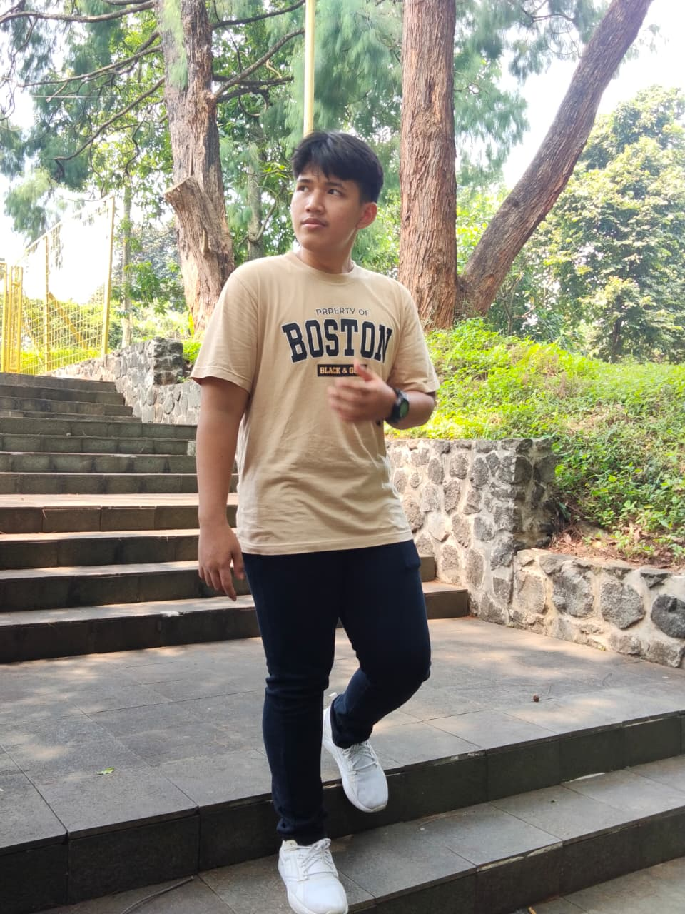
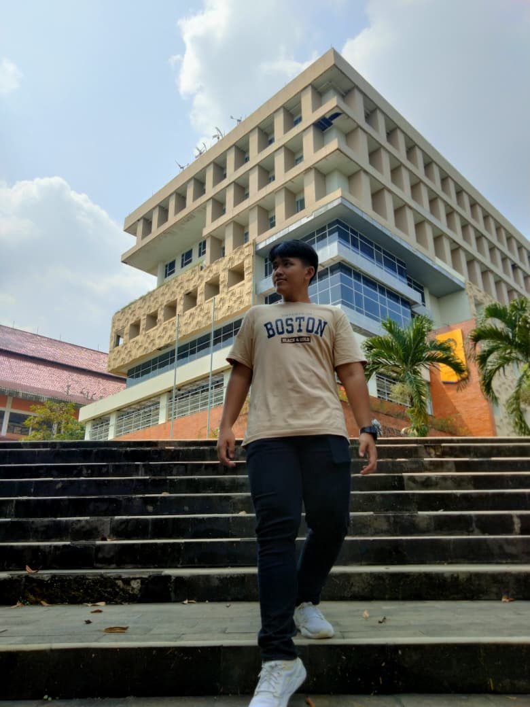

DESIGN
& FREEDOM
Membangun sistem digital yang jelas, elegan, dan berguna.


Belajar dengan cara membangun, lalu mendokumentasikannya.
Saya mahasiswa yang menyadari betapa cepatnya teknologi dan transformasi digital bergerak. Daripada hanya membaca teori, saya memilih untuk langsung mempraktikkan — membangun website, merapikan SEO, menyusun workflow automation, dan mencoba sistem berbasis AI — lalu mencatat apa yang berhasil dan apa yang tidak.
Arah yang sedang saya tuju adalah menjadi seseorang yang bisa merancang dan merawat sistem digital secara menyeluruh: dari sisi teknis (website, automation, AI), sisi visibilitas (SEO), hingga sisi komunikasi (digital marketing & dokumentasi). Saya juga terus mengeksplorasi area baru seperti blockchain dan Web3 untuk memperluas cara pandang saya terhadap teknologi.
Progres yang dibangun bertahap
-
Tahap Awal
Mengenal dasar digital & mulai eksplorasi
Memulai dengan mempelajari dasar-dasar website, konten digital, dan cara kerja platform digital marketing — membangun fondasi pemahaman sebelum masuk ke praktik yang lebih teknis.
-
Praktik
Mulai praktik langsung di website & SEO
Beralih dari teori ke praktik: mengelola struktur website, menerapkan dasar-dasar SEO, dan belajar membaca data melalui Google Analytics serta tools terkait.
-
Membangun Sistem
Eksplorasi AI & workflow automation
Mulai membangun sistem yang lebih kompleks — workflow automation dengan N8N, eksperimen dengan AI agent, dan menyusun repository serta dokumentasi agar setiap proses bisa diulang dan dirapikan.
-
Fokus Saat Ini
Merangkai AI, automation, dan web systems jadi satu arah
Saat ini saya fokus menyatukan apa yang sudah dipelajari — AI engineering, automation, SEO, dan web development — menjadi kemampuan yang saling terhubung untuk membangun sistem digital yang lebih utuh.
Implementasi nyata yang sudah dijalankan
-
SEO Network Development
Menyusun struktur dan jaringan SEO untuk halaman serta konten, mulai dari riset kata kunci hingga penataan internal link dan tracking visibilitas pencarian.
-
Landing Page Development
Merancang dan membangun landing page dengan struktur yang rapi, berorientasi pada kejelasan pesan dan kenyamanan pengunjung dalam menelusuri halaman.
-
GitHub Repository Management
Mengelola repository — menyusun struktur folder, menulis dokumentasi README, dan menjaga riwayat perubahan tetap rapi dan mudah ditelusuri.
-
Website Deployment
Menjalankan proses deployment website dari sisi struktur halaman, konfigurasi dasar, hingga memastikan halaman tampil dan berjalan dengan baik di production.
-
AI Workflow Development
Merancang alur kerja berbasis AI untuk membantu proses riset, penyusunan konten, dan pengelolaan informasi — menghubungkan beberapa tools agar bekerja sebagai satu sistem.
-
Automation Projects
Membangun automation workflow dengan N8N untuk menyambungkan berbagai layanan dan mengurangi pekerjaan repetitif dalam proses operasional digital.
-
Documentation Projects
Menyusun dokumentasi kerja — SOP, catatan workflow, dan knowledge base — agar setiap proses yang sudah dijalankan bisa dipahami ulang dan dikembangkan di kemudian hari.
Kemampuan yang sedang diasah
-
AI Engineering
- ChatGPT
- Claude
- Gemini
- Prompt Design
- AI Agents
-
Automation
- N8N
- Flowise
- Workflow Design
- Integrasi API
-
SEO
- Riset Keyword
- On-Page SEO
- Google Analytics
- Search Console
-
Website Development
- WordPress
- HTML & CSS
- Struktur Halaman
- Landing Page
-
Git & GitHub
- Version Control
- Repository Structure
- README & Docs
-
Deployment
- Hosting Setup
- Domain & DNS
- Production Check
-
Documentation
- SOP Writing
- Knowledge Base
- Workflow Mapping
-
Digital Marketing
- Content Strategy
- Audience Research
- Brand Messaging
Sistem & eksperimen yang telah dibangun
-
AI SystemAI & Automation
AI Agent Hub
-
WebsiteWeb Development
Bumi Eenk Website
-
Landing PageLanding Page System
Landing Page Berbasis SEO
-
SEOSEO & Documentation
SEO Documentation Framework
-
AutomationWorkflow Automation
Automation Workflow Project
-
OperationsAsset Management
Digital Asset Management System
Cara berpikir yang terstruktur
-
SOP Pengelolaan Konten & Aset Digital
SOPPanduan langkah-demi-langkah untuk menyimpan, menamai, dan mengambil ulang aset digital — dibuat agar proses kerja tidak bergantung pada ingatan dan bisa diikuti siapa pun.
-
Workflow Map Automation N8N
Workflow MapPemetaan visual alur automation — titik pemicu, proses, dan tujuan akhir setiap workflow — supaya sistem yang dibangun tetap mudah dipahami saat perlu dikembangkan lagi.
-
Framework Riset & Tracking SEO
FrameworkKerangka kerja untuk riset kata kunci, perencanaan struktur konten, dan pemantauan performa pencarian secara berkala dan konsisten.
-
Knowledge Base AI & Automation
Knowledge BaseKumpulan catatan eksperimen — prompt yang efektif, konfigurasi workflow, dan pelajaran dari percobaan yang gagal maupun berhasil — sebagai rujukan untuk proyek berikutnya.
Tonggak yang sudah dilewati
-
Menyelesaikan proyek website dari awal hingga deployment
Berhasil membawa proyek website melalui keseluruhan proses — perencanaan struktur, pengembangan, penerapan SEO dasar, hingga tampil di production.
-
Membangun automation workflow pertama yang berjalan stabil
Merancang dan menjalankan workflow automation dengan N8N yang menghubungkan beberapa layanan tanpa intervensi manual berulang.
-
Menyusun dokumentasi kerja yang bisa dipakai ulang
Menulis SOP dan catatan workflow yang membuat proses yang sudah dijalankan dapat diulang dan dikembangkan oleh diri sendiri di masa depan.
-
Konsisten belajar & mempraktikkan AI di proyek nyata
Menerapkan AI bukan sekadar mencoba-coba, melainkan menjadikannya bagian dari alur kerja nyata — mulai dari riset, automation, hingga dokumentasi.
Mari terhubung
-
Email
rayhanoye2006[at]gmail.com -
Lokasi
Jakarta, Indonesia
Fortune Favors the Bold — prinsip yang terus saya pegang untuk berani mencoba, salah, belajar, dan membangun lagi.